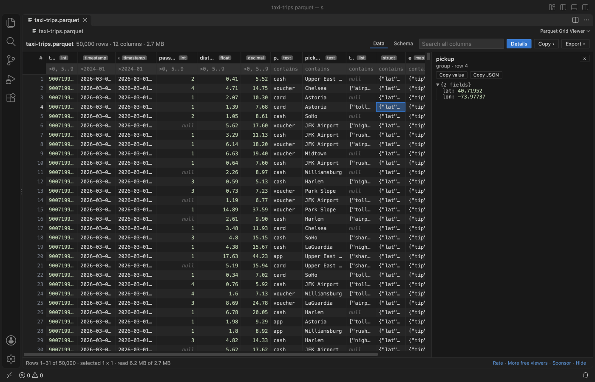

Open files in VS Code and Cursor / Tables and data
Convert a Parquet file to CSV or JSON Lines
Parquet is a compressed column format, so you need a reader to turn it into CSV. Parquet Grid Viewer opens .parquet, .parq and .pq files in VS Code and exports every row of the current view, with filters and sort applied, as CSV or JSON Lines. Export is free, has no row limit, and keeps every digit of INT64 values above 2^53. Zovo Pro (USD 19 once) adds a column profile, a compare of two Parquet files and a folder report, with 3 free tries each.
Free, MIT license. Extension ID zovo.zovo-parquet-viewer, version 0.2.2. Needs VS Code 1.90.0 or newer.
Also free from Zovo: XLSX, Excel, CSV & Parquet Viewer, VS Code Marketplace · Open VSX (Cursor, Windsurf).

Steps in VS Code
- Install Parquet Grid Viewer from the Marketplace, or press Ctrl+P (Cmd+P on macOS) and run
ext install zovo.zovo-parquet-viewer. - Click the Parquet file in the Explorer. If another editor opens it, right-click the file and pick "Open in Parquet Grid Viewer".
- To export part of the file, type in the box under a header, for example
=cash,>100or2026-03-01..2026-03-31. Click a header to sort. - Click Export in the toolbar and pick the CSV entry or the JSON Lines entry. Each entry shows how many rows it will write.
- Choose where to save. A progress bar shows while the rows are written, and a message says how many rows were exported.
- Open the CSV. The first row holds the column names, nulls are empty cells, timestamps are ISO 8601 text, and LIST, MAP and STRUCT values are JSON text in one cell.
Where Zovo Pro saves time
Opening Parquet files, the grid, the Schema tab, filters, sort, search, cell details, copy and the CSV and JSON Lines export are free. The file is opened read-only and never changed.
Before you pass a CSV on, it helps to know what is in each column. Column profile reads every row once and lists the nulls, distinct values, min, max, mean, standard deviation and the 5 most common values of every column, as a Markdown report you can save as CSV. The other Pro tools compare two Parquet files row by row and report schema drift across a folder of Parquet files.
With Column profile (Zovo Pro)
- Right-click the file in the Explorer and pick "Zovo Pro: Column profile", or run "Parquet Grid Viewer: Column profile: nulls, distinct, min, max, mean (Zovo Pro)" from the Command Palette.
- Read the report. Save it as CSV if you need it in a spreadsheet. A try counts only when the report is on screen.
Column profile works 3 times on your computer before it asks for a license, and a try counts only when you get a result. Opening a file shows no popup and no countdown.
Zovo Pro costs USD 19 once. It is not a subscription, and it turns on the Pro tools in every Zovo extension, not only Parquet Grid Viewer. After a card payment (Stripe) your license key shows on the next page. In VS Code, run "Zovo Pro: Enter Zovo Pro license key" from the Command Palette and paste it. The key is checked on your computer, with no network call. With GitHub Sponsors, pick the "$19 one time" tier, then run "Zovo Pro: I already paid: unlock with GitHub Sponsors" and sign in with the same GitHub account. With PayPal, send USD 19 with "Zovo Pro" in the note and the key comes by email within a day.
A team of 5: USD 59 once, by card or by PayPal. Every rule and every Pro tool is on the Zovo Pro page.
Steps in Cursor, Windsurf or VSCodium
- Open the Extensions view with Ctrl+Shift+X (Cmd+Shift+X on macOS).
- Search for
zovo.zovo-parquet-viewerand click Install. Cursor, Windsurf and VSCodium install from Open VSX, where it is published aszovo/zovo-parquet-viewer. - If your editor has no gallery, download the .vsix from the Open VSX page and run "Extensions: Install from VSIX...".
- Then use it the same way as in VS Code.
What Parquet Grid Viewer handles
- Snappy, Gzip, Zstd, Brotli, LZ4 and LZ4_RAW compression, and data pages v1 and v2.
- INT64 and UINT64 values above 2^53, exact in the grid, in copy and in the export.
- INT96 timestamps from Spark and Hive.
- Nested LIST, MAP and STRUCT columns, written as JSON text.
What it does not do
- In JSON Lines, an integer above 2^53 is written as a string so that no digit is lost. Tools that expect a number there need to convert it.
- The CSV uses commas and UTF-8. There is no option for another separator.
- Sorting stops at 2,000,000 rows. Filter first to sort part of a bigger file. Export without a sort has no row limit.
- Encrypted Parquet files and files whose column chunks live in other files are not read.
- Files on remote or virtual file systems are read whole, up to 512 MB (setting
parquetViewer.maxVirtualFileMB).
Other options
- DuckDB. A free SQL engine.
COPY (SELECT * FROM 'file.parquet') TO 'file.csv'converts the file in one line from its command line. - pandas.
pd.read_parquet("file.parquet").to_csv("file.csv")in Python. Needs pyarrow or fastparquet, and loads the whole file into memory.
Install counts and Open VSX status were checked on 13 November 2026. Descriptions in quotes are the extensions' own.
Questions
Can I export only some rows?
Yes. Filter or search first. Export writes every row of the current view, not only the rows on screen.
Is there a row limit?
No. Export reads the row groups in turn in a background thread. Copy to the clipboard stops at 100,000 rows.
Why do my big IDs keep every digit?
INT64 values are read as 64-bit integers, not as JavaScript numbers, so an ID such as 9007199254740993 is written as it is. Viewers that use JavaScript numbers round it to 9007199254740992.
Does it work in Cursor or Windsurf?
Yes. Cursor, Windsurf and VSCodium install extensions from Open VSX. Search for the extension in their Extensions view and install it there.
More about Parquet Grid Viewer
Read the Parquet Grid Viewer page for every feature and setting, or the source code on GitHub.
Related guides
- XLSX, Excel, CSV & Parquet Viewer on the VS Code Marketplace (also on Open VSX). Opens xlsx, xls, csv and parquet files as a sortable table with SQL filters.
- Use a Parquet viewer in VS Code
- View the schema of a Parquet file
- Find out why a Parquet file will not open
- Open an Excel .xlsx file in VS Code
Support this work
If this extension saves you time, you can support the work on GitHub Sponsors. Monthly tiers start at $5, and one-time tiers start at $15. Sponsorship is optional, and the tool works the same without it.
Need your format supported?
Open a format request with a sample file, and I reply there whether it can be done. For USD 299 once, through this GitHub Sponsors tier, I add your file format or a missing feature to this extension, with tests, within 7 days.